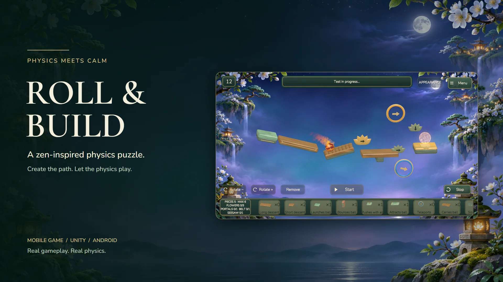
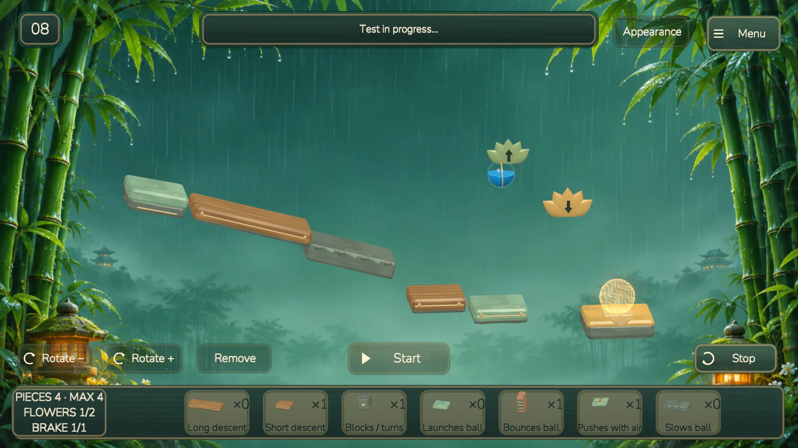
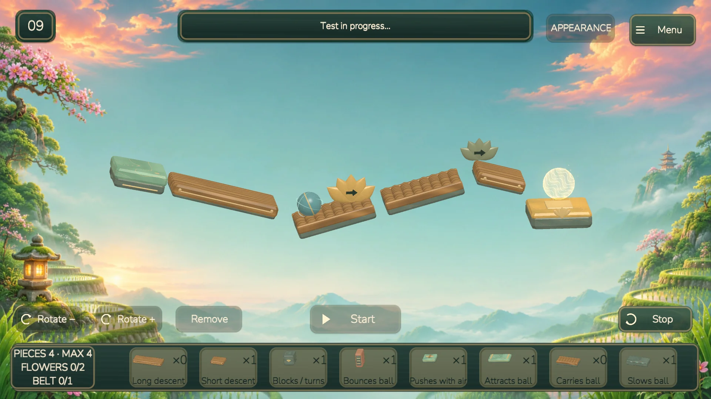
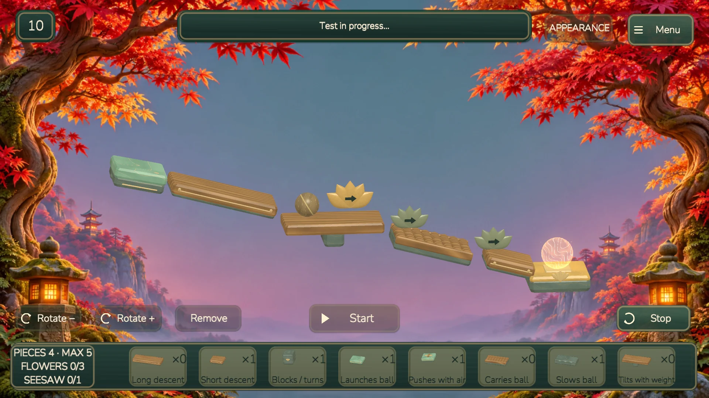
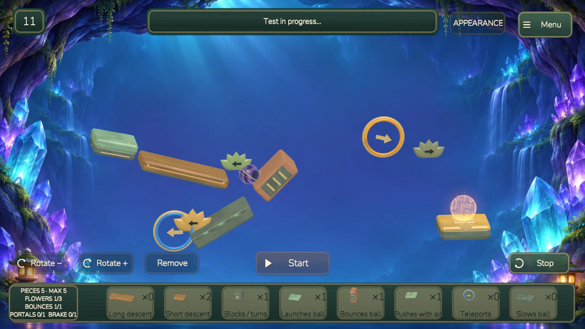
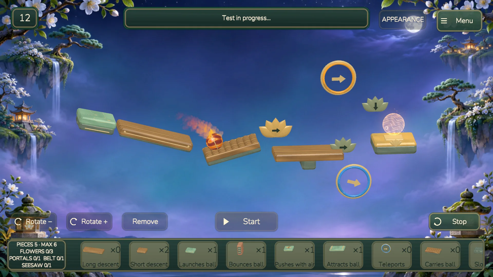
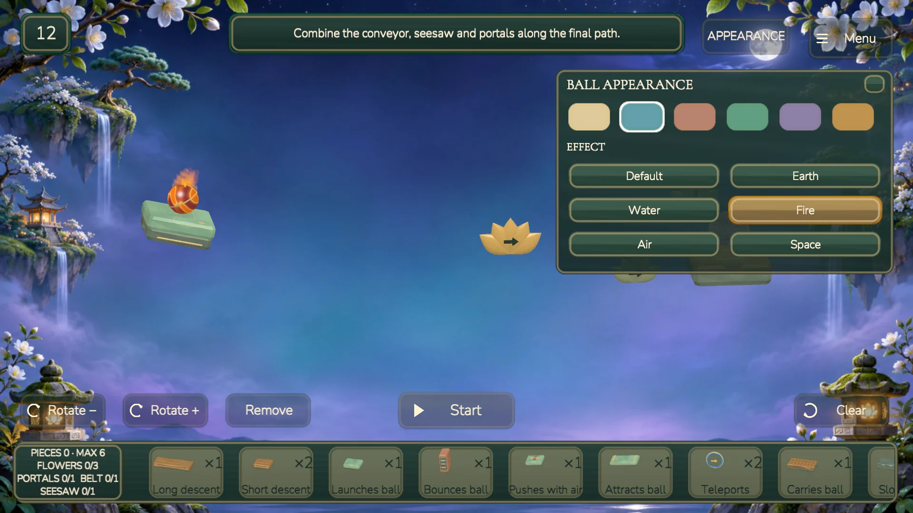

← Torna ai progetti
UNITY · ANDROID · PHYSICS PUZZLE
Roll & Build
Create the path. Let the physics play. A zen-inspired mobile puzzle where a limited set of
tools opens up different physical solutions.

Roll & Build — physics meets calm

A water-styled sphere jumps across player-built platforms in a bamboo forest.

Conveyors guide the sphere uphill above misty rice terraces.

The sphere crosses a balancing platform in an autumn garden.

Bounces, braking and portals create a new route inside a crystal cave.

Conveyors, a seesaw and portals form a route between moonlit floating islands.

Sphere color and elemental effect customization in the game interface.